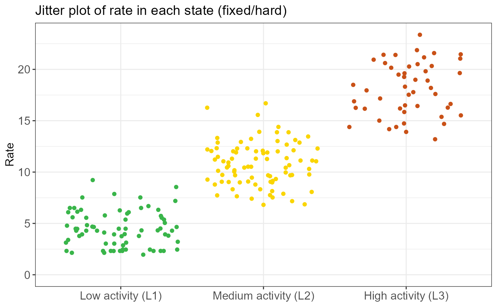
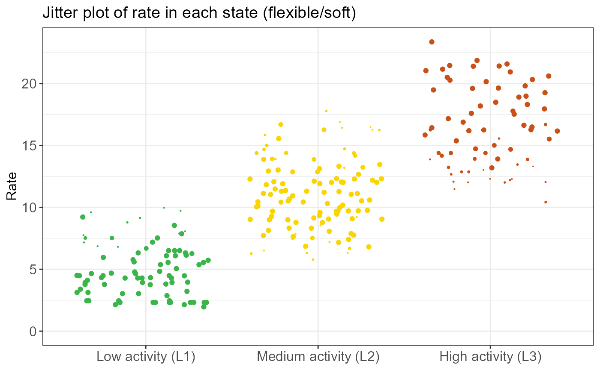
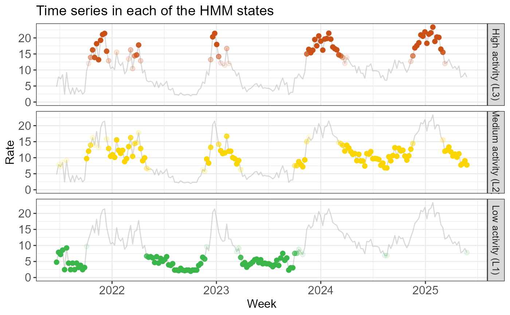
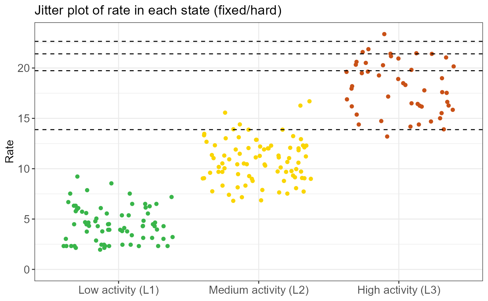
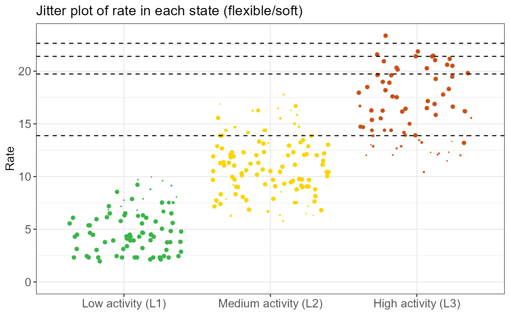
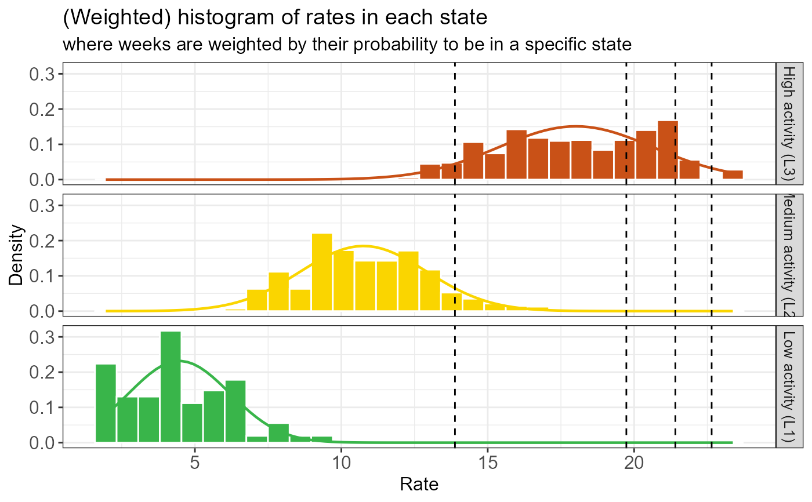
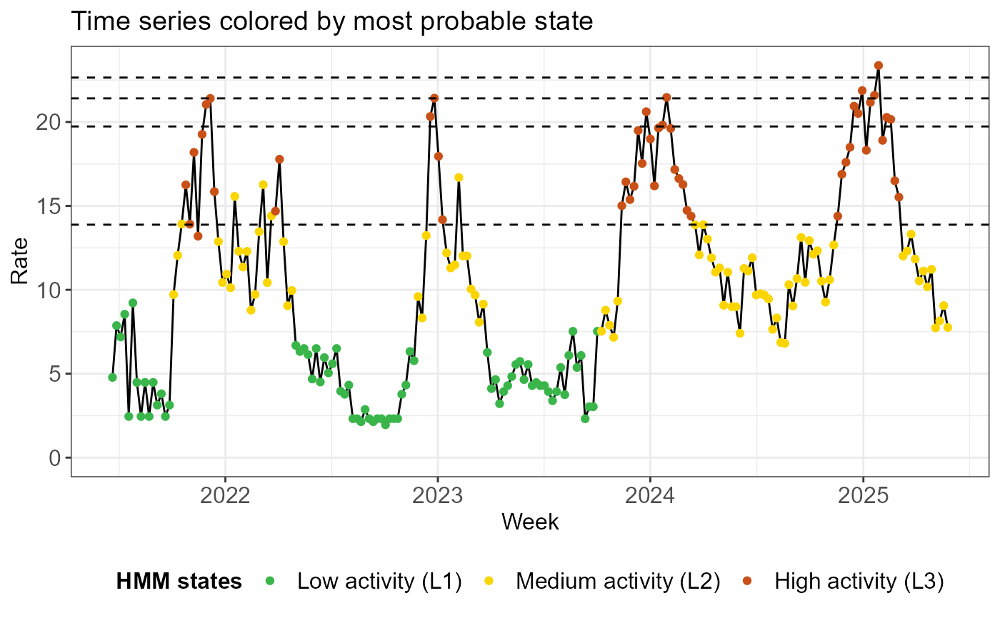

Calculates QUEST thresholds (default: low, medium, high, very high) by determining specific quantiles of the observed surveillance signal, weighted by the posterior probability that the system is in a user-defined epidemic state.
Usage
run_threshold_computation(
list_results,
quantiles = c(0.05, 0.7, 0.9, 0.99),
epidemic_state_indices = NULL
)Arguments
- list_results
An object of class
epiquest_hmmproduced byrun_hmm().- quantiles
A numeric vector. The cumulative probabilities (between 0 and 1) at which to calculate thresholds. Defaults to
c(0.05, 0.70, 0.90, 0.99).- epidemic_state_indices
An integer vector. The indices of the HMM states to be jointly considered as the "epidemic" signal. If
NULL, defaults to the state with the highest mean (see section 'Defining the "epidemic" state(s)' below).
Value
An object of class epiquest_thresholds, which inherits from
epiquest_hmm. This is the input list_results with 3
additional elements:
thresholds: A numeric vector of calculated rate values.quantiles: The input quantile levels used for calculation.epidemic_state_indices: The indices of states used to define the epidemic state.
Details
This function implements a "soft" thresholding approach. Instead of calculating quantiles from the raw data alone, it uses the HMM posterior probabilities to weight the observations.
For each observation, the function:
Determines how likely a specific week is to be in the "epidemic" state(s).
Constructs a weighted empirical cumulative distribution function (ECDF) of the observed
rate.Uses linear interpolation to find the exact rates that correspond to your chosen
quantiles.
Defining the "epidemic" state(s)
The epidemic_state_indices argument allows you to define what states
in the HMM output represent "epidemic activity". This flexibility is useful in
several scenarios:
Combining states: In a 3-state model, you might consider both state 2 ("Elevated") and state 3 ("Epidemic") to represent high activity activity. You would set
epidemic_state_indices = c(2, 3).Excluding extreme outliers: If the data includes a "super-epidemic" year, the highest HMM state might capture only those rare extremes. To set thresholds that are more sensitive to normal annual epidemics, you might choose to define the epidemic signal based only on the state with the second highest mean.
If no indices are provided, the function defaults to the state with the highest mean incidence.
Examples
# Fit a 3-state HMM to (continuous) rate data
fit <- run_hmm(df_sari_be, n_states = 3, type = "rate")
# Check state information
summary(fit)
#>
#> ========================================================
#> EpiQUEST hidden Markov model summary
#> ========================================================
#>
#> --- Model configuration --------------------------------
#> Type: Continuous (Gaussian)
#> Number of states: 3
#> Seasonal: FALSE
#> Number of observations: 206
#>
#> --- Estimated state parameters -------------------------
#> State Mean Standard deviation
#> L1 4.468 1.722
#> L2 10.758 2.159
#> L3 18.011 2.641
#>
#> --- Transition matrix ----------------------------------
#> State ToL1 ToL2 ToL3
#> FromL1 95.73% 4.27% 0.00%
#> FromL2 2.51% 91.01% 6.48%
#> FromL3 0.00% 11.32% 88.68%
#>
#> --- State distribution (observations) ------------------
#> State Total weight Proportion
#> L1 72.6 35.2%
#> L2 85.2 41.4%
#> L3 48.2 23.4%
#>
#> Note: Weights are posterior probabilities.
#> ========================================================
# Visualize state information
create_hmm_plots(fit)





 # Compute QUEST thresholds using the highest state (L3) as the epidemic
# state. By default, epidemic_state_indices is the highest state.
thresh <- run_threshold_computation(fit)
# Check QUEST threshold information
summary(thresh)
#>
#> ==============================================================
#> EpiQUEST threshold summary
#> ==============================================================
#>
#> --- Model configuration --------------------------------------
#> Type: Continuous (Gaussian)
#> Number of states: 3
#> Seasonal: FALSE
#> Number of observations: 206
#> State(s) defined as epidemic: L3
#>
#> --- Calculated QUEST thresholds ------------------------------
#> Level Quantile Value
#> Low 5% 13.881
#> Medium 70% 19.734
#> High 90% 21.408
#> Very high 99% 22.647
#>
#> Note: Thresholds calculated using weighted ECDF
#> based on posterior probabilities of epidemic state(s).
#> ==============================================================
# Visualize threshold information
create_threshold_plots(thresh)
# Compute QUEST thresholds using the highest state (L3) as the epidemic
# state. By default, epidemic_state_indices is the highest state.
thresh <- run_threshold_computation(fit)
# Check QUEST threshold information
summary(thresh)
#>
#> ==============================================================
#> EpiQUEST threshold summary
#> ==============================================================
#>
#> --- Model configuration --------------------------------------
#> Type: Continuous (Gaussian)
#> Number of states: 3
#> Seasonal: FALSE
#> Number of observations: 206
#> State(s) defined as epidemic: L3
#>
#> --- Calculated QUEST thresholds ------------------------------
#> Level Quantile Value
#> Low 5% 13.881
#> Medium 70% 19.734
#> High 90% 21.408
#> Very high 99% 22.647
#>
#> Note: Thresholds calculated using weighted ECDF
#> based on posterior probabilities of epidemic state(s).
#> ==============================================================
# Visualize threshold information
create_threshold_plots(thresh)






